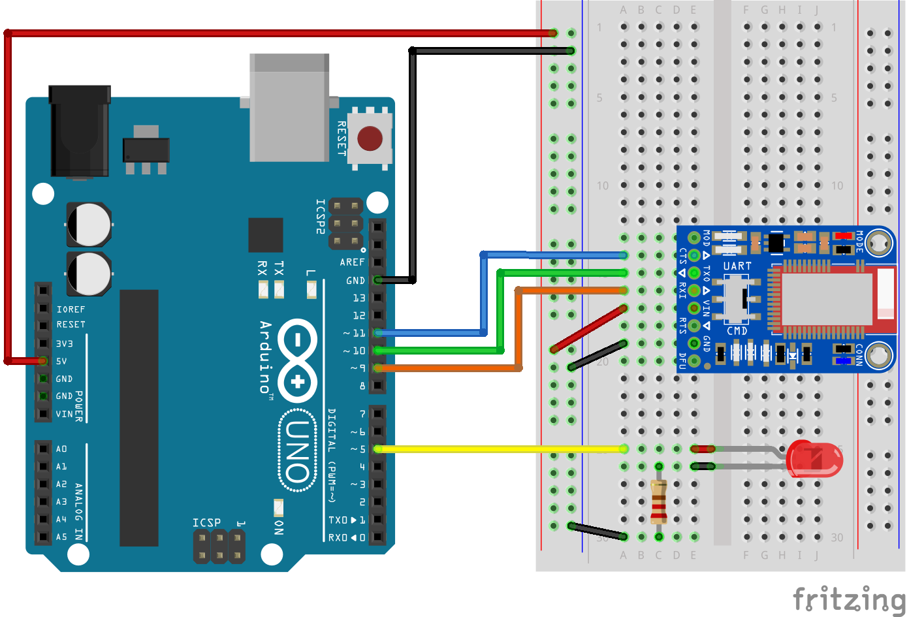

Arduino Bluefruit LED On/Off BLE
Control The Arduino From An App Using BLE. This example shows you how to make an app that controls an Arduino board and lights up an LED.
Communication with the Arduino is made using Bluetooth Low Energy (BLE) through Adafruit's Bluefruit LE UART Friend board.

Source code
You can browse the source code for this example at the Evothings GitHub repository
The file index.html is the entry point of the app.
The file Bluefruit_LE_LED_on_off.ino contains the Arduino BLE server code that listens for commands from the app.
What you need
This example runs in Evothings Viewer on Android or iOS.
You need to run the example in Evothings Viewer. Alternatively, you can make a Cordova application if you wish to distribute the app. You then need to include the Cordova plugin com.evothings.ble.
An iOS device or an Android device with support for Bluetooth 4.0 (which includes BLE) is required. In addition Android 4.3 or later is needed. Please note that BLE support on Android is still not fully mature. As a result, you may experience difficulties running this example. If the app stops working, restart Evothings Viewer.
For the Arduino setup, you need:
- LED
- A 220Ω resistor
- Bluefruit LE UART Friend board
- Install Adafruit's library in the Arduino IDE library folder. You can download it from Adafruit's website.
Here is the sketch:
The LED is connected to pin 5.
The Bluefruit board is connected as follows (default configuration):
- CTS on pin 11
- TXO on pin 10
- RXI on pin 9
- VIN on 5V
- GND on GND
The MOD and RTS pins are not used in this example.
How to get up and running
Follow these steps to get started with this example:
- Wire up the Arduino board.
- Open Bluefruit_LE_LED_on_off.ino in the Arduino development tool.
- Upload the program to the Arduino.
- Run Evothings Workbench on your desktop/laptop computer.
- Run Evothings Viewer on an iOS or Android mobile device and connect to the Workbench.
- Launch the example Arduino Bluefruit LE UART Friend LED On/Off from the Workbench window.
- Follow on-screen instructions in the app.
- If everything works, you should now be able to turn the LED on and off using the buttons in the app. If it does not work, check your wiring and that the right pins are used (remember pin 5 is used for output).
- Now you can proceed with making your own sketch designs and add more buttons to the app.